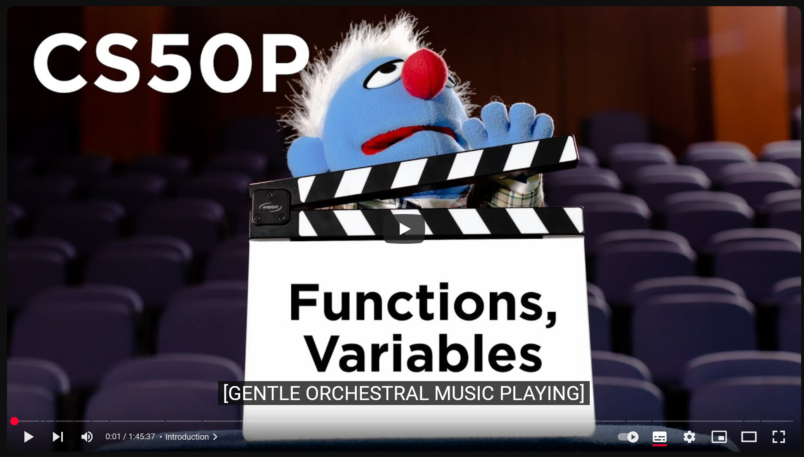

Functions & Variables
Video
 (1:45hr)
Creating Code with Python
- VS Code is a special type of text editor that is called an IDE (Integrated Development Environment). At the top, you’ll notice a text editor.
- At the bottom, you will see a terminal where you can execute commands. Type Ctrl+` to open a new terminal window, if one is not open.
- In the terminal, you can execute
code hello.pyto start coding. - In the text editor above, you can type
print("hello, world"). This is a famous canonical program that nearly all coders write during their learning process. - In the terminal window, you can execute commands. To run this program, you are going to need to move your cursor to the bottom of the screen, clicking in the terminal window. You can now type a second command in the terminal window. Next to the dollar sign, type
python hello.pyand press the enter key on your keyboard. - Recall that computers really only understand zeros and ones. Therefore, when you run
python hello.py, python will interpret the text that you created in hello.py and translate it into the zeros and ones that the computer can understand. - The result of running the
python hello.pyprogram ishello, world. - Congrats! You just created your first program.
REPL - Read, Evaluate, Print and Loop
- Python has a built-in interactive interpreter called the Python REPL (Read-Eval-Print Loop). This allows you to type and execute code directly from your terminal.
- To open the Python REPL, type
pythonand press enter. - You can now type code directly into your terminal and see the results immediately.
- To exit the Python REPL, type
exit()and press enter. - Type
print("hello, world")and press enter to see the result.
Functions
- Functions are verbs or actions that the computer or computer language will already know how to perform.
- In your
hello.pyprogram, the print function knows how toprintto the terminal window. - The print function takes arguments. In this case,
"hello, world"are the arguments that the print function takes.
Bugs
- Bugs are a natural part of coding. These are mistakes, problems for you to solve! Don’t get discouraged! This is part of the process of becoming a great programmer.
- Imagine in our
hello.pyprogram that accidentally typedprint("hello, world"notice that we missed the final)required by the compiler. If I purposefully make this mistake, you’ll the compiler will output an error in the terminal window! - Often, the error messages will inform you of your mistakes and provide you clues on how to fix them. However, there will be many times when the compiler is not this kind.
Improving Your First Python Program
- We can personalise your first Python program.
- In our text editor in
hello.pywe can add another function. input is a function that takes a prompt as an argument. We can edit our code to say - This edit alone, however, will not allow your program to output what your user inputs. For that, we will need to introduce you to variables
Variables
- A variable is just a container for a value within your own program.
- In your program, you can introduce your own variable in your program by editing it to read
-
Notice that this equal = sign in the middle of
name = input("What's your name? ")has a special role in programming. This equal sign literally assigns what is on the right to what is on the left. Therefore, the value returned byinput("What's your name? ")is assigned to name. -
If you edit your code as follows, you will notice an error
- The program will return hello, name in the terminal window regardless of what the user types.
- Further editing our code, you could type
- The result in the terminal window would be
- We are getting closer to the result we might intend!
- You can learn more in Python’s documentation on data types.
Comments
- Comments are a way for programmers to track what they are doing in their programs and even inform others about their intentions for a block of code. In short, they are notes for yourself and others who will see your code!
- You can add comments to your program to be able to see what it is that your program is doing. You might edit your code as follows:
- Comments can also serve as a to-do list for you.
Pseudocode
Pseudocode is a method of describing the logic in an algorithm. It makes use of capitalised keywords and indentation to show control structures used.
In pseudocode:
- keywords are written in capitals
- structural elements come in pairs, eg for every BEGIN there is an END, for every IF there is an ENDIF
- indenting is used to identify control structures in the algorithm
- when refining the solution to a problem, a subroutine can be referred to in an algorithm by its name, with a separate subroutine developed with that same name to show the detailed logic
Using pseudocode is important especially when you don’t understand how to accomplish a coding task. For example, you might plan out an algorithm before you start coding. This will help you understand what needs to be done and how it should be done.
Further Improving Your First Python Program
- We can further edit our code as follows:
- It turns out that some functions take many arguments.
- We can use a comma
,to pass in multiple arguments by editing our code as follows: - The output in the terminal, if we typed “David” we would be
hello, David. Success.
Strings and Parameters
- A string, known as a str in Python, is a sequence of text.
-
Rewinding a bit in our code back to the following, there was a visual side effect of having the result appear on multiple lines:
-
Functions take arguments that influence their behaviour. If we look at the documentation for print you’ll notice we can learn a lot about the arguments that the print function takes.
- Looking at this documentation, you’ll learn that the print function automatically includes a piece of code
end='\n'. This\nindicates that the print function will automatically create a line break when run. The print function takes an argument calledendand the default is to create a new line. -
However, we can technically provide an argument for
endourselves such that a new line is not created! -
We can modify our code as follows:
By providing# Ask the user for their name name = input("What's your name? ") print("hello,", end="") print(name)end=""we are overwriting the default value of end such that it never creates a new line after this first print statement. Providing the name as “David”, the output in the terminal window will behello, David. -
Parameters, therefore, are arguments that can be taken by a function.
- You can learn more in Python’s documentation on print.
A small problem with quotation marks
- Notice how adding quotation marks as part of your string is challenging.
print("hello,"friend"")will not work, and the compiler will throw an error.- Generally, there are two approaches to fixing this. First, you could simply change the quotes to single quotation marks.
- Another, more commonly used approach would be code as
print("hello, \"friend\""). The backslashes tell the compiler that the following character should be considered a quotation mark in the string and avoid a compiler error.
Formatting Strings
- Probably the most elegant way to use strings would be as follows:
Notice the
finprint(f"hello, {name}"). Thisfis a special indicator, called an f-string, for Python to treat this string a special way, different than previous approaches we have illustrated in this lecture. Expect that you will be using this style of strings quite frequently in this course.
More on Strings
- You should never expect your user to cooperate as intended. Therefore, you will need to ensure that the input of your user is corrected or checked.
- It turns out that built into strings is the ability to remove whitespace from a string.
-
By utilising the method strip on name as name = name.strip(), will strip all the whitespaces on the left and right of the users input. You can modify your code to be:
Rerunning this program, regardless of how many spaces you type before or after the name, it will strip off all the whitespace. -
Using the title method, it would title case the user’s name:
- By this point, you might be very tired of typing python repeatedly in the terminal window. You cause use the up arrow of your keyboard to recall the most recent terminal commands you have made.
-
Notice that you can modify your code to be more efficient:
This creates the same result as your previous code. -
We could even go further!
- You can learn more about strings in Python’s documentation on str.
Integers or int
- In Python, an integer is referred to as an
int. - In the world of mathematics, we are familiar with +, -, *, /, and % operators. That last operator
%or modulo operator may not be very familiar to you. - You don’t have to use the text editor window in your compiler to run Python code. Down in your terminal, you can run python alone. You will be presented with
>>>in the terminal window. You can then run live, interactive code. You could type1+1, and it will run that calculation. This mode will not commonly be used during this course. -
Opening up VS Code again, we can type
code calculator.pyin the terminal. This will create a new file in which we will create our own calculator. -
First, we can declare a few variables.
Naturally, when we runpython calculator.pywe get the result in the terminal window of 3. We can make this more interactive using the input function. - Running this program, we discover that the output is incorrect as
12. Why might this be? - Prior, we have seen how the
+sign concatenates two strings. Because your input from your keyboard on your computer comes into the compiler as text, it is treated as a string. We, therefore, need to convert this input from a string to an integer. We can do so as follows: - The result is now correct. The use of
int(x)is called “casting,” where a value is temporarily changed from one type of variable (in this case, a string) to another (here, an integer). - We can further improve our program as follows: This illustrates that you can run functions on functions. The inner function is run first, and then the outer one is run. First, the input function is run. Then, the int function.
- You can learn more in Python’s documentation of int.
Readability Wins
- When deciding on your approach to a coding task, remember that one could make a reasonable argument for many approaches to the same problem.
- Regardless of what approach you take to a programming task, remember that your code must be readable. You should use comments to give yourself and others clues about what your code is doing. Further, you should create code in a way that is readable.
Float Basics
- A floating point value is a real number that has a decimal point in it, such as
0.52. -
You can change your code to support floats as follows:
This change allows your user to enter1.2and3.4to present a total of4.6. -
Let’s imagine, however, that you want to round the total to the nearest integer. Looking at the Python documentation for round, you’ll see that the available arguments are
The output will be rounded to the nearest integer.round(number[n, ndigits]). Those square brackets indicate that something optional can be specified by the programmer. Therefore, you could doround(n)to round a digit to its nearest integer. Alternatively, you could code as follows: -
What if we wanted to format the output of long numbers? For example, rather than seeing
1000, you may wish to see1,000. You could modify your code as follows:Though quite cryptic, that# Get the user's input x = float(input("What's x? ")) y = float(input("What's y? ")) # Create a rounded result z = round(x + y) # Print the formatted result print(f"{z:,}")print(f"{z:,}")creates a scenario where the outputted z will include commas where the result could look like1,000or2,500.
More on Floats
-
How can we round floating point values? First, modify your code as follows:
When inputting# Get the user's input x = float(input("What's x? ")) y = float(input("What's y? ")) # Calculate the result z = x / y # Print the result print(z)2as x and3as y, the result z is0.6666666666, seemingly going on to infinite as we might expect. -
Let’s imagine that we want to round this down. We could modify our code as follows:
As we might expect, this will round the result to the nearest two decimal points. -
We could also use
f-stringto format the output as follows:This cryptic# Get the user's input x = float(input("What's x? ")) y = float(input("What's y? ")) # Calculate the result z = x / y # Print the result print(f"{z:.2f}")f-stringcode displays the same as our prior rounding strategy. -
You can learn more in Python’s documentation of float.
Functions
- Wouldn’t it be nice to create our own functions?
- Let’s bring back our final code of
hello.pyby typingcode hello.pyinto the terminal window. Your starting code should look as follows: We can better our code to create our own special function that says “hello” for us! -
Erasing all our code in our text editor, let’s start from scratch:
Attempting to run this code, your compiler will throw an error. After all, there is no defined function for hello. -
We can create our own function called hello as follows:
Notice that everything underdef hello()is indented. Python is an indented language. It uses indentation to understand what is part of the above function. Therefore, everything in the hello function must be indented. When something is not indented, it treats it as if it is not inside thehellofunction. Runningpython hello.pyin the terminal window, you’ll see that your output is not exactly as you may want. -
We can further improve our code:
Here, in the first lines, you are creating your# Create our own function def hello(to): print("hello,", to) # Output using our own function name = input("What's your name? ") hello(name)hellofunction. This time, however, you are telling the compiler that this function takes a single parameter: a variable called to. Therefore, when you callhello(name)the computer passesnameinto thehellofunction as to. This is how we pass values into functions. Very useful! Runningpython hello.pyin the terminal window, you’ll see that the output is much closer to our ideal presented earlier in this lecture. -
We can change our code to add a default value to hello:
Test out your code yourself. Notice how the first# Create our own function def hello(to="world"): print("hello,", to) # Output using our own function name = input("What's your name? ") hello(name) # Output without passing the expected arguments hello()hellowill behave as you might expect, and the second hello, which is not passed a value, will, by default, outputhello, world. -
We don’t have to have our function at the start of our program. We can move it down, but we need to tell the compiler that we have a
mainfunction and a separatehellofunction.This alone, however, will create an error of sorts. If we rundef main(): # Output using our own function name = input("What's your name? ") hello(name) # Output without passing the expected arguments hello() # Create our own function def hello(to="world"): print("hello,", to)python hello.py, nothing happens! The reason for this is that nothing in this code is actually calling themainfunction and bringing our program to life. -
The following very small modification will call the main function and restore our program to working order:
Returning Values
-
You can imagine many scenarios where you don’t just want a function to perform an action but also to return a value back to the main function. For example, rather than simply printing the calculation of
x + y, you may want a function to return the value of this calculation back to another part of your program. This “passing back” of a value we call areturnvalue.Returning to our
Effectively, x is passed to square. Then, the calculation of x * x is returned back to the main function.calculator.pycode by typingcode calculator.py. Erase all code there. Rework the code as follows:
Summing Up
Through the work of this single lecture, you have learned abilities that you will use countless times in your own programs. You have learned about…
- Creating your first programs in Python;
- Functions;
- Bugs;
- Variables;
- Comments;
- Pseudocode;
- Strings;
- Parameters;
- Formatted Strings;
- Integers;
- Principles of readability;
- Floats;
- Creating your own functions; and
- Return values.